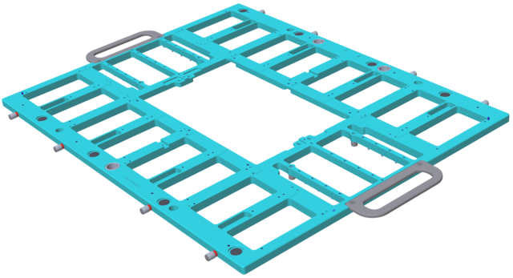

MUX cards stiffener (MUXSTIF01)
The DUT board stiffener MUXSTIF01 is required for applications that connect to the MUX cards.
The MUXSTIF01 stiffener carries up to eight interposer cards, each of them connecting to one or two MUX cards. The stiffener provides the mechanical stability to resist the additional pressure from the pogo pin interface of the MUX cards.

Refer to MUX cards design data for the detailed design data of the stiffener. Refer to DUT board stiffener manufacturing guidelines for common information regarding the design of DUT board stiffeners and to Stiffener common parts for information regarding some common stiffener parts.
Functional changes
- Introduced in SmarTest 7.3.2 / 8.1.2